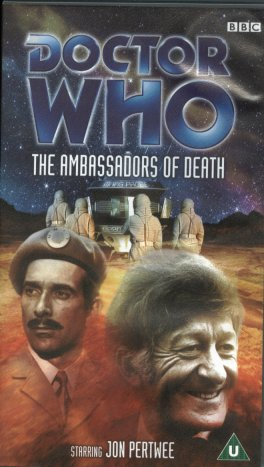
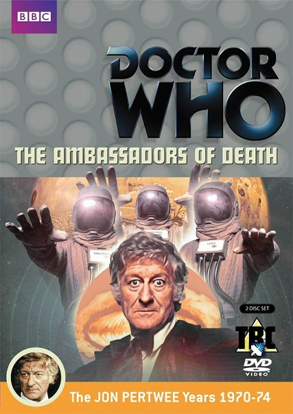
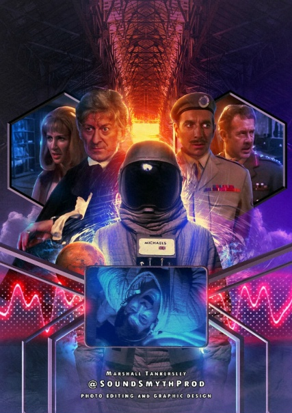
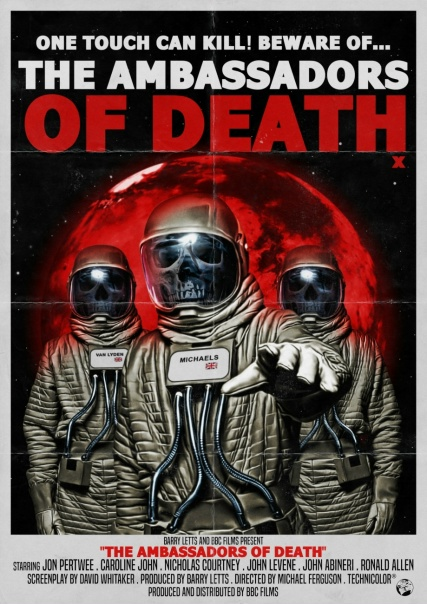

Эра Третьего Доктора (7 сезон)
<<< НАЗАД ||| 3. Послы смерти ||| ДАЛЬШЕ >>>
Субтитры: Русские и Английские |  |
|---|---|
с обновлением визуальных эффектов (cunningmunki) Субтитры: отсутствуют | |
Дата выхода: 21 марта - 2 мая 1970
Формат: 7 эпизодов по 25 мин.
| Первый эпизод сохранился в цвете (видеокассета PAL 2") 2-7 эпизоды сохранились в ч/б * В 5-м эпизоде цвет восстановлен (PAL D3) * В эпизодах 2-4, 6-7 - цвет восстановлен по хроматографическим точкам |
|---|
 |  помощник |  помощник |
Космический центр теряет связь с возвращающимся зондом, а странные звуки и скачки радиации заставляют ЮНИТ и Доктора искать источник угрозы. Проблема оказывается глубже обычного сбоя: на кону — судьба астронавтов и риск глобальной паники. Доктор быстро понимает, что слышит не шум, а закодированные сообщения, и выходит на след инопланетной угрозы, спрятанной прямо на Земле. Важная фишка серии — напряжение между наукой, армией и дипломатией: каждый тянет одеяло на себя, а Доктор вынужден лавировать между приказами, секретами и человеческим страхом. Ещё один слой — гонка со временем: пока политики спорят, угроза становится необратимой.
 VHS - май 2002 |  DVD - 1 октября 2012 |  Blu-ray - 3 марта 2025 * Версия в нашей группе |
|---|




